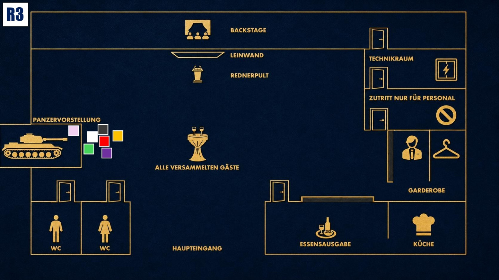

Konfrontation
Der Moment der Wahrheit. Geheimnisse kommen ans Licht. Nutze alles, was du weißt.

Das Ziel der dritten Runde
Brich Michaels Fassade. Finde heraus, woher er Informationen über deine Vergangenheit aus dem Jahr 1996 hat, und verhindere gleichzeitig, dass deine damalige Rolle gegen dich verwendet wird.
Deine Ausgangslage
Michael hat Informationen über deine Einheit und den Einsatz von 1996 erwähnt, die niemals öffentlich bekannt waren. Dadurch erkennst du ein Muster: Die Gäste, deine Einstellung bei Stahlmann & Faust und dieser Abend wurden offenbar gezielt vorbereitet. Du warst nicht der Täter, sondern möglicherweise das eigentliche Ziel.
Dein Beweis
Nach etwa 10 Minuten in der dritten Runde erhältst du einen Beweis von der Polizei. Du weißt nicht, was sich darin befindet. Öffne ihn erst, wenn du denkst, dass der richtige Zeitpunkt gekommen ist, und lies ihn anschließend allen vor.
Deine Geheimnisse
1. Das Jahr 1996: Michael kennt Details über deine Spezialeinheit und den Einsatz gegen ein kolumbianisches Kartell. Eigentlich gab es nur einen Augenzeugen, der diese Wahrheit kennen konnte. Vielleicht sitzt er heute mit dir am Tisch.
2. Du warst das Ziel: Menschen wurden gezielt zusammengebracht, Entscheidungen beeinflusst und Beziehungen aufgebaut. Du warst nicht für Coles Tod verantwortlich, aber dieser Abend scheint geplant worden zu sein, um dich unter Druck zu setzen.
Deine Mission
1. Bring Michael zu einem Fehler: Stelle gezielte Fragen zu 1996. Er soll sich verplappern, ein Detail korrigieren oder Wissen zeigen, das er nicht haben dürfte.
2. Stelle den Ablauf infrage: Du glaubst, dass Coles Tod nicht geplant war und dass eigentlich du getroffen werden solltest. Stelle Fragen, die zeigen, dass du die Zusammenhänge erkennst.
Deine Erinnerung an 19.40 Uhr

Zum Vergrößern tippen
Du stehst nahe am Panzer, der nach langer Vorbereitung endlich präsentiert werden soll. Die Stimmung wirkt angespannt. Plötzlich wird es dunkel. Als das Licht zurückkehrt, liegt Cole Silverman am Boden. Alle anderen Verdächtigen sind in der Nähe, nur bei Diego und Eric weißt du nicht, wo sie während des Blackouts waren.
Mögliche Fragen
An Michael: „Die 110. Einheit war nicht öffentlich bekannt. Woher hast du das?“
An Enisa: „Du hast mich zu diesem Job gedrängt. War das deine Idee oder hat dich jemand darum gebeten?“